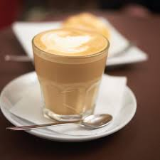

Flat White, Avustralya ve Yeni Zelanda kökenli, espresso ve sütün muazzam bir uyumla buluştuğu, son yılların en popüler kahvelerinden biridir.r.
Latte ve Cappuccino ile çok sık karıştırılsa da, Flat White'ı onlardan ayıran çok net iki özellik vardır: Daha yoğun kahve tadı ve kadifemsi mikro-köpük dokusu.
Latteye göre daha az süt içerir, bu yüzden kahvenin o güçlü aroması maskelenmez, ön planda kalır.
Üzerindeki köpük ise cappuccinodaki gibi balonlu ve kalın bir tabaka değil; sütün pürüzsüzce kremsileşmiş, adından da anlaşılacağı gibi "düz/pürüzsüz" (flat) bir mikro-köpük katmanıdır.
Kahvenin gövdeli ve sert olmasını sağlar.
Çok az köpürtülmüş, tamamen pürüzsüz süt.
En üstte parlak ve incecik bir kadife doku.
Evde Flat White yaparken en büyük sır, sütü çok fazla kabartmadan, sadece krema kıvamına getirmektir.
Bunu evde en iyi French Press yardımıyla yapabiliriz.
1.Güçlü Kahve Tabanını Oluşturun:1 dk.Kupanızın içine 2 tatlı kaşığı granül kahveyi koyun. Üzerine sadece yarım çay bardağı sıcak su ekleyerek iyice karıştırın. Amacımız Flat White'ın orijinalindeki "double shot espresso" yoğunluğunu yakalamak.
2.Sütü Mikro-Köpük Kıvamına Getirin:3 dk.Sütü cezvede ısıtın (kaynatmayın, 60-65°C idealdir). Isınan sütü French Press'e dökün. Flat White için süzgeci hızlıca değil, çok yavaş ve dipten dipten yukarı aşağı hareket ettirin. Sütün üzerinde büyük baloncuklar oluşmamalı, süt parlak ve yoğun bir krema kıvamı almalı.
3.Yavaşça Birleştirin:1 dk.French Press'i tezgaha hafifçe vurarak varsa kalan büyük baloncukları söndürün. Ardından bu kadifemsi sütü, hazırladığınız yoğun kahvenin tam ortasından, yavaşça ve dairesel hareketlerle dökün.
Flat White vs. Latte: Fark Nedir?
Latte: Büyük bir bardakta, bol sütlü, üzerinde hafif bir köpük olan, kahve tadının oldukça yumuşak geldiği bir içecektir.
Flat White: Daha küçük bir bardakta, çift shot kahveyle yapılan, sütün sadece kahveyi kremsileştirmek için kullanıldığı ve kahve tadının buram buram alındığı bir içecektir.